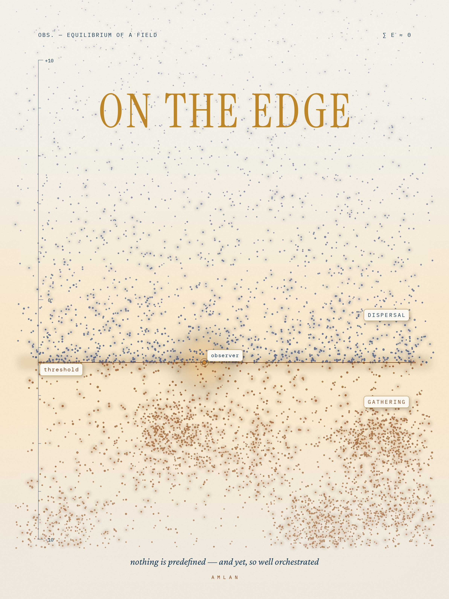

On the Edge
Nothing is predefined. Nothing is predicted as real. Everything stays on the edge. And yet the universe is so well orchestrated.

Brussels, June 2026.
I always think that we all live on the edge. And I observe this edge on a daily basis. Nothing is predefined. Nothing is predicted as real. Everything stays on the edge. And yet the universe is so well orchestrated.
This is the thought I keep returning to.
When I watch videos of space, I see how Saturn is, and how Jupiter is. I see how the Sun annihilates itself, slowly, over billions of years. They are all so different. But all of them obey one thing. Gravity. It pulls everything inward and holds the planets, the stars, the galaxies. It is the weakest of the forces, but it never lets go. It is not strong. It is patient. It wins the long game by waiting.
But gravity is not the whole story, and that is what unsettles me and pulls me in at the same time. There is dark matter, which we cannot see and know only by its pull. And there is dark energy, which drives the deep space deeper, stretching the emptiness between the galaxies further apart. So much is unknown. I sometimes wonder, just thinking out loud, what if that unknown is also gravity. Gravity from some other system we cannot reach. We know dark matter only as a pull and nothing else. So maybe it already is gravity from somewhere beyond us.
The more I observe, the more I see one pattern everywhere. Balance.
A star burns, and the burning pushes outward while gravity pulls inward, and for billions of years the two stay equal. When the fuel ends, gravity wins, and the star collapses. A galaxy holds its shape because the stars are moving, and their motion balances the pull. Everywhere, two opposite things lean against each other. Nothing stable is held by one force alone. Gravity is always one hand. Something else is always the other.
But gravity only decides where things go. It does not decide when. The direction everything moves toward is not gravity. It is entropy. The hot becomes cold. The gathered becomes scattered. Gravity builds the stars, and entropy will one day empty them. We are alive in the brief middle of it. Late enough that the stars exist. Early enough that the cold has not yet arrived.
For a long time I also believed the total energy of everything must stay the same, that every change is balanced out again. Inside a closed system this is true. But the whole universe does not have to balance. As space stretches, light loses its energy on the way, and that energy goes nowhere. And there is a stranger possibility: that the total energy of the universe might be exactly zero, the energy of all the matter cancelled by the pull of gravity itself. If that is true, then the universe cost nothing to make. Something came from nothing, because nothing and something quietly add up to the same.
So this is why I keep saying we live on the edge.
But slowly I have understood that the edge is not the dangerous place. It is the only place where anything happens. Too much order, and nothing moves. Too much chaos, and nothing holds. The stars, the weather, the cell, the thought — they all live in the narrow band in between. We do not survive in spite of the edge. The edge is the very thing that makes us.
And the strangest part is this. The edge has produced something that can turn around and see the edge. That is me, observing, every day. A small fold of the universe that looked back and noticed the balance it is standing on. Most of the universe is balanced without ever knowing it. I get to know it.
Nothing is predefined. Nothing is predicted as real. And it is, somehow, beautifully arranged. I do not think I need to resolve the two. I only need to keep observing the edge.
Brussels — June 2026